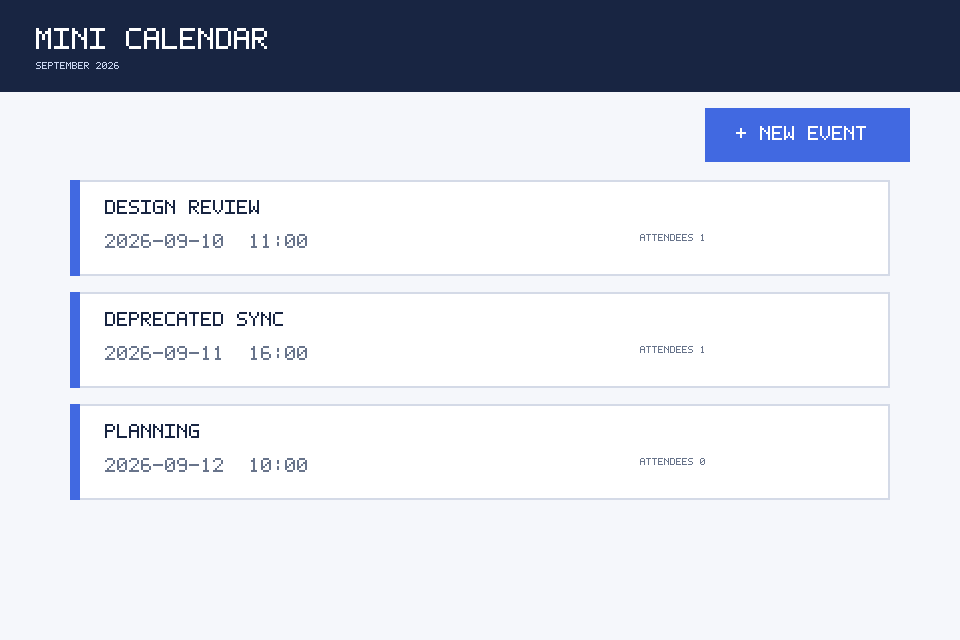
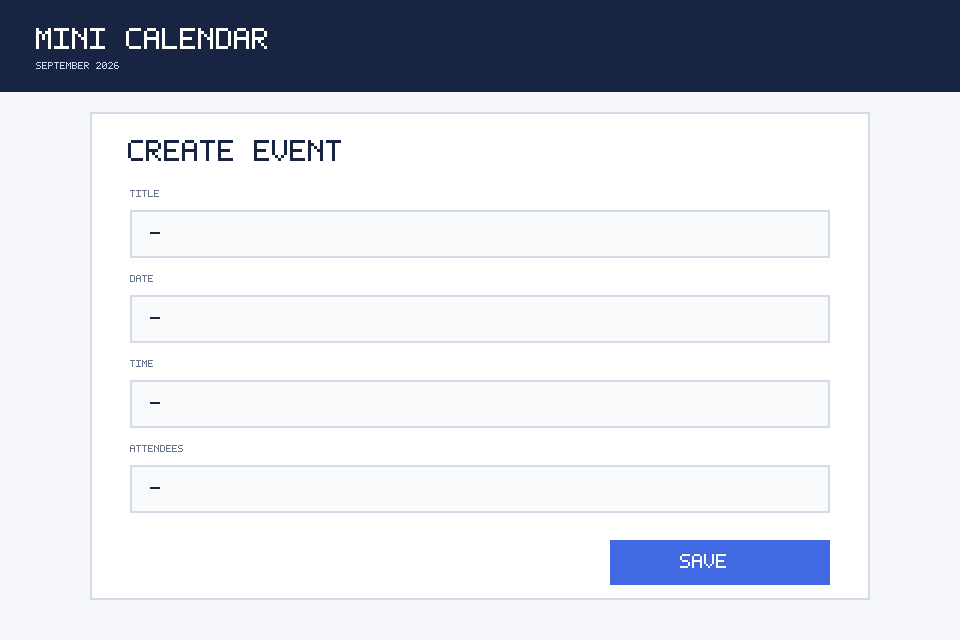
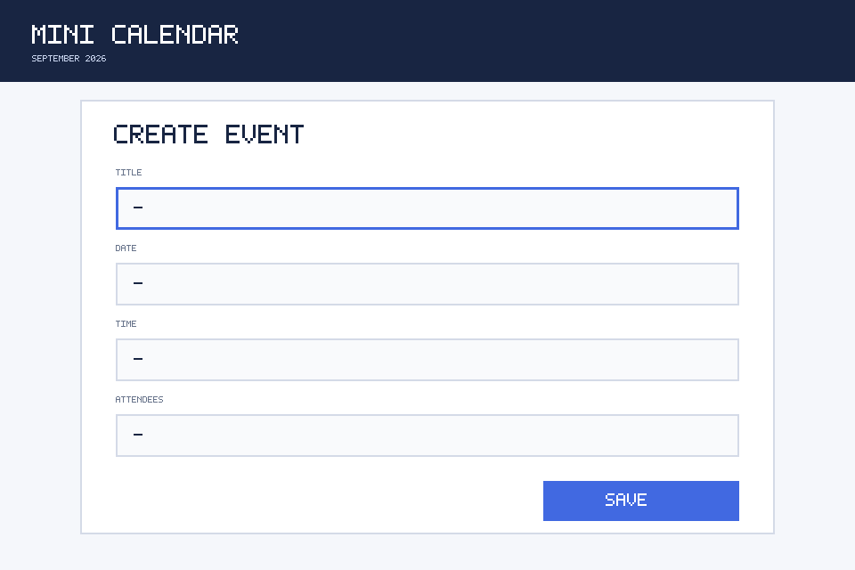

Create event
seed=0 · split=dev · stop=parse_error



| step | parsed | screen changed | raw model output |
|---|---|---|---|
| 0 | tap | yes | {'action': 'CLICK', 'value': None, 'position': [0.84, 0.2]} |
| 1 | tap | yes | {'action': 'CLICK', 'value': None, 'position': [0.29, 0.35]} |
| 2 | parse error | no | {'action': 'CLICK', 'value': None, 'position': [0.29, 0.48]},{'action': 'INPUT', 'value': 'Research Sync 0', 'position': [0.29, 0.48]},{'action': 'CLICK', 'value': None, 'position': [0.73, 0.88]} |